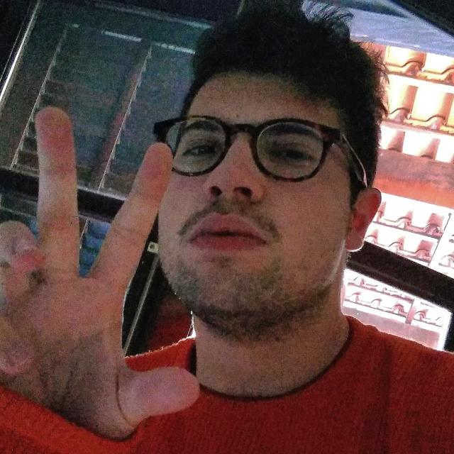
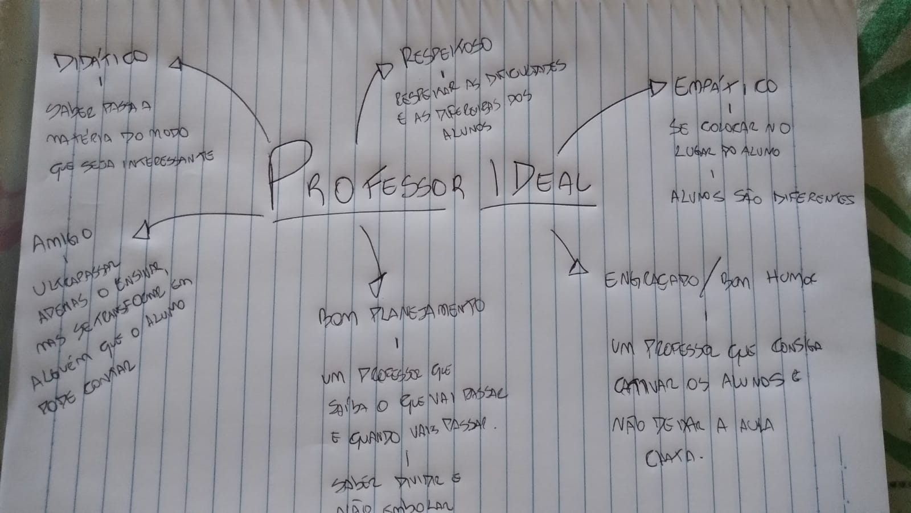
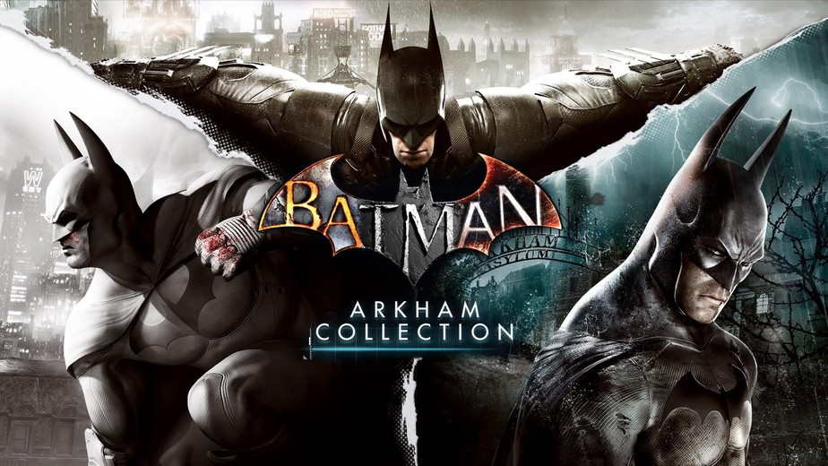

Bem vindo(a)! Minha página pessoal:
Olá, meu nome é Igor Bizerra.

igor.feba@aluno.ufabc.edu.br
Minha voz
O vídeo do meu jogo favorito
Minha música favorita
Agora irei relatar um pouco das minhas atividades em aula
Começando pelo dia em que tiver que fazer uma vídeo aula
Ou quando tive que cantar com amigos uma Música
Essa foi a capa feita para a música
Me inspirei e cantei sozinho
Segue o link do YT
https://youtu.be/kaXncfli2yE
Fiz um mapa mental de como penso em um Professor ideal

Pesquisamos sobre um jogo, e descobrimos a história dele

Espero continuar aprendendo mais nessa segunda parte do Quadrimestre suplementar